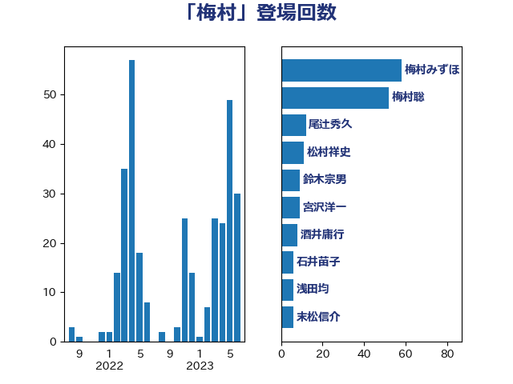

単語「梅村」

| 梅村聡 | 日本維新の会 | 66 回 |
| 梅村みずほ | 日本維新の会 | 46 回 |
| 山本順三 | 自由民主党 | 11 回 |
| 東徹 | 日本維新の会 | 10 回 |
| 松村祥史 | 自由民主党 | 10 回 |
| 宮沢洋一 | 自由民主党 | 8 回 |
| 山東昭子 | 自由民主党 | 8 回 |
| 田村まみ | 国民民主党 | 8 回 |
| 石井苗子 | 日本維新の会 | 6 回 |
| 田村憲久 | 自由民主党 | 5 回 |
| 一谷勇一郎 | 日本維新の会 | 4 回 |
| 野村哲郎 | 自由民主党 | 4 回 |
| 古川俊治 | 自由民主党 | 3 回 |
| 川田龍平 | 立憲民主党 | 3 回 |
| 平木大作 | 公明党 | 3 回 |
| 末松信介 | 自由民主党 | 3 回 |
| 赤池誠章 | 自由民主党 | 3 回 |
| 足立康史 | 日本維新の会 | 3 回 |
| 野田国義 | 立憲民主党 | 3 回 |
| 倉林明子 | 日本共産党 | 2 回 |
| 吉田忠智 | 立憲民主党 | 2 回 |
| 堀井巌 | 自由民主党 | 2 回 |
| 斎藤嘉隆 | 立憲民主党 | 2 回 |
| 松野博一 | 自由民主党 | 2 回 |
| 柴田巧 | 日本維新の会 | 2 回 |
| 田島麻衣子 | 立憲民主党 | 2 回 |
| 石井浩郎 | 自由民主党 | 2 回 |
| 萩生田光一 | 自由民主党 | 2 回 |
| 金子恭之 | 自由民主党 | 2 回 |
| 長峯誠 | 自由民主党 | 2 回 |
| 須藤元気 | 無所属 | 2 回 |
| 伊藤孝恵 | 国民民主党 | 1 回 |
| 宮本岳志 | 日本共産党 | 1 回 |
| 小泉進次郎 | 自由民主党 | 1 回 |
| 山添拓 | 日本共産党 | 1 回 |
| 岸田文雄 | 自由民主党 | 1 回 |
| 後藤茂之 | 自由民主党 | 1 回 |
| 徳永エリ | 立憲民主党 | 1 回 |
| 新妻秀規 | 公明党 | 1 回 |
| 杉尾秀哉 | 立憲民主党 | 1 回 |
| 松下新平 | 自由民主党 | 1 回 |
| 武田良太 | 自由民主党 | 1 回 |
| 浅田均 | 日本維新の会 | 1 回 |
| 浦野靖人 | 日本維新の会 | 1 回 |
| 菅義偉 | 自由民主党 | 1 回 |
| 西田実仁 | 公明党 | 1 回 |
| 鈴木俊一 | 自由民主党 | 1 回 |
| 長谷川岳 | 自由民主党 | 1 回 |